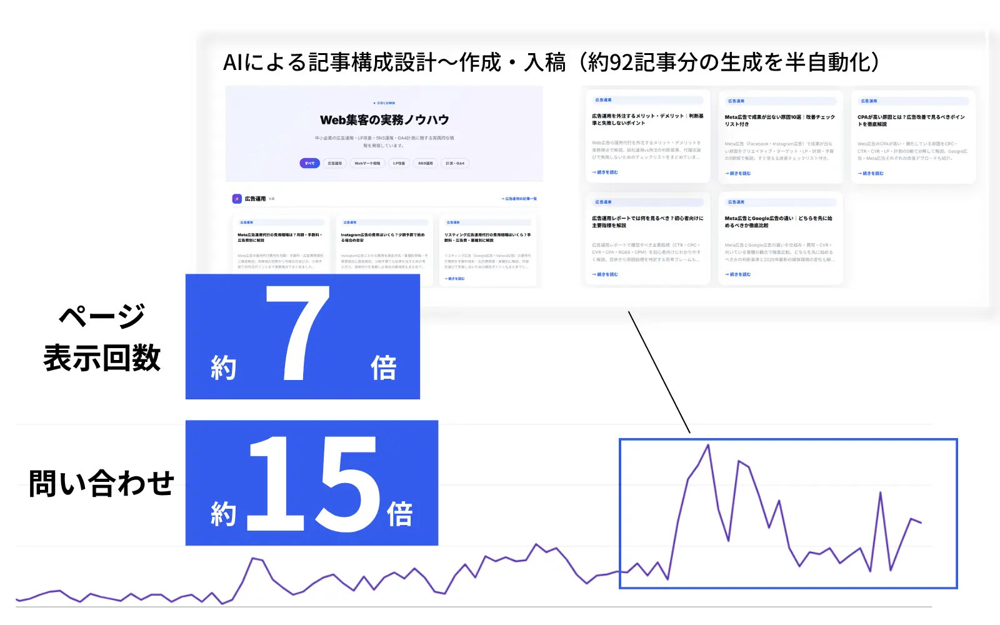

この記事でわかること
- LLMO対策の「運用代行」が実際にカバーする業務範囲7項目
- 導入から成果が動き出すまでの標準的な流れ
- 料金体系3パターン（診断のみ・月額支援のみ・記事制作込み包括支援）と費用相場
- 統一指標がまだ無いLLMOで、「引用」と「言及」の2軸から効果を測る考え方
- 契約前に確認すべきポイントと、向いている会社・向かない会社の判断軸
LLMO対策の「運用代行」とは、何を指すのか
LLMO（Large Language Model Optimization）対策の「運用代行」とは、ChatGPT・Gemini・Perplexity・Google AI Overviews（AIによる概要）といった生成AIの回答内で自社の情報が引用・推薦されるよう、戦略設計から記事制作、サイトへの実装、継続的なモニタリングまでを一つの会社が一気通貫で担当するサービスを指します。「LLMO」は大規模言語モデルへの最適化を強調した呼び方で、「AIO」（AI Optimization）とほぼ同じ施策を指して使われることが多く、会社によって呼称の使い分けが異なります。
Googleは公式のAI最適化ガイドの中で、「SEOのベストプラクティスは生成AI検索でも引き続き有効」としたうえで、独自の視点を含むオリジナルなコンテンツと、技術的な基盤整備（クローラビリティ・モバイル対応・表示速度）の継続を推奨しています。一方で「構造化データは生成AI検索に必須ではない」とも明言しており、LLMOという名前から連想されるような特殊な魔法の施策があるわけではなく、地に足のついたコンテンツ運用の延長線上にあるという点は押さえておく必要があります（出典：AI 最適化ガイド｜Google 検索セントラル）。
運用代行会社は、この「地道な継続運用」を対象AI別・指標別に体系化し、社内リソースが不足している会社の代わりに回す役割を担っています。次の章で、実際にどこまでの業務が含まれるのかを整理します。
運用代行が担う業務範囲7項目
公開されているサービス内容を横断的に見ると、LLMO対策の運用代行がカバーする業務は、おおむね次の7項目に整理できます。
| 項目 | 内容 |
|---|---|
| ①現状分析・引用状況調査 | 自社・競合の情報がChatGPT・Gemini・Perplexity・AI Overviewsなどにどう引用・言及されているかを定量・定性で調査する |
| ②記事制作・コンテンツ最適化 | 結論ファースト・数値・固有名詞入りの短い段落など、AIが引用しやすい構成での記事の新規制作とリライト、入稿までを実行する |
| ③構造化データ・FAQ実装 | Article・FAQPageなどの構造化データの実装、人物・組織・サービス名といったエンティティの整理をサイトに反映する |
| ④E-E-A-T強化 | 発信者・監修者情報を明確化し、情報源としての専門性・権威性・信頼性をサイト上で担保する |
| ⑤外部露出・デジタルPR | 自社サイト以外の第三者メディアでの言及を獲得し、AIが参照する情報の裾野を広げる |
| ⑥月次計測・モニタリング | Search Consoleのデータや、GA4のチャネル区分などを用いて対象AIごとの引用・言及状況を継続計測し、レポーティングする |
| ⑦内製化移管支援 | 将来的に社内で運用を巻き取れるよう、運用タスクの手順化や社内担当者への研修を行う。用意していない会社もある |
実際に運用代行を掲げるあるサービスでは、ChatGPT・Gemini・Perplexity対象の調査、構造化データ実装、FAQコンテンツ設計を明示し、計測にはSearch ConsoleとGA4の対象ページの表示回数・クリック数を用い、施策単位の効果は「分離できないため個別の効果は断定しない」という誠実な方針を取っているケースもあります（出典：AIO・AI検索対策サービス｜0120.co.jp）。①〜⑥はどの運用代行会社でもおおむね共通していますが、⑦の内製化移管支援まで用意しているかどうかは会社によって差が出るポイントです。将来的な内製化を見据えている場合は、契約前に確認しておくとよいでしょう。
導入から成果が動くまでの流れ
運用代行を掲げるサービスの多くは、契約後の進め方を段階的に設計しています。よくある流れは次のとおりです。
診断・設計フェーズ（1か月目の目安）
既存サイトのSEO/LLMO診断、キーワード・対象プロンプトの設計、優先度の整理を行います。既存のオウンドメディアがある場合は、この段階でリライト候補の棚卸しも並行します。
入稿・実装フェーズ（2か月目〜）
設計した構成にもとづき、新規記事の制作・入稿と、構造化データ・FAQスキーマの実装を並行して進めます。既存記事がある場合は、優先度の高いページからリライトを重ねます。
計測・改善フェーズ（3〜4か月目以降）
対象AIでの引用・言及状況を月次で計測し、仕様変更や検索意図の変化にあわせて構成・記事を継続的に見直します。数値が動き始めるのは、この段階からが目安とされています。
継続契約の最低期間は6か月程度に設定している会社が多く、これは検索エンジンと生成AIの双方に評価されるまでに一定の記事数と期間が必要という考え方にもとづいています。単発の診断のみであれば、契約期間の縛りなく利用できる会社もあります。

料金体系3パターンと費用相場
LLMO対策の運用代行費用は、含まれる業務範囲によって大きく3パターンに分かれます。
| 料金体系 | 費用相場 | 向いている会社 |
|---|---|---|
| ①診断のみ | 簡易診断5万〜30万円、詳細診断・戦略設計15万〜90万円（単発） | まず現状を把握したい。実装は社内で行う体制がある |
| ②月額支援のみ | モニタリング中心で月5万〜15万円、コンサル・運用型で月15万〜100万円以上 | 記事制作は社内で回せるが、計測・改善の巻き取りだけ外部に任せたい |
| ③記事制作込み包括支援 | 月20万〜100万円以上 | 戦略設計から記事制作・実装・計測までを一括で任せたい |
多くの企業は月額20万〜80万円の中心的なレンジで契約しており、SEO対策と統合する場合は月額50万円を超えることが多いとされています。企業の支払額は、診断範囲の深さ・対策対象キーワードとプロンプトの数・計測頻度によって大きく変動するため、「どこまでを含めるか」の事前すり合わせが重要です（出典：LLMO対策の費用相場はいくら？料金体系や進め方を専門家が解説｜株式会社メディアグロース）。
実際の運用代行サービスの例として、診断単発10万円、記事制作込みの月額プランを25万円〜50万円で公開している会社もあります（出典：AIO・AI検索対策サービス｜0120.co.jp）。当社（LnX）の場合は、初期費用30万円＋月額15万円〜（月8本の記事入稿）から月額25万円（月16本）・月額40万円（月30本）のプランをご用意しており、SEO専門人材が戦略設計を、記事制作はAIを活用して効率化する分業体制を取っています。最低契約期間は原則6か月です。
「相場より安い」プランを見つけたときは、単純に喜ぶのではなく「7項目のうち何が含まれていないのか」を確認してください。記事制作込みの表記でも、月に何本・何文字の制作が含まれるかは会社によって大きく異なります。
効果測定の考え方——「引用」と「言及」の2軸
LLMO対策では、従来のSEOにおける「検索順位」のような業界共通の統一指標がまだ確立されていません。そのため、効果測定は「引用」と「言及」という2つの軸で判断するのが現実的とされています（出典：LLMO対策の費用相場はいくら？料金体系や進め方を専門家が解説｜株式会社メディアグロース）。
| 軸 | 状態 | 主な確認方法 |
|---|---|---|
| 引用 | 自社の記事・ページが、生成AIの回答内で実際に参照・出典表示された状態 | Search Consoleの検索パフォーマンス、GA4上のAI経由流入（チャネル区分） |
| 言及 | 本文中で参照元として明示されなくても、社名・サービス名が回答内に挙げられた状態 | 対象プロンプトでの定期的な手動調査、言及有無のログ化 |
「引用」はSEOとの統合効果として現れやすく、既存のアクセス解析の延長で追いやすい指標です。一方「言及」は、直接の流入には結びつきにくいものの、指名検索やブランド認知の間接指標として機能します。運用代行のレポートを受け取る際は、この2軸のどちらか一方だけで「効果が出た／出ていない」と判断していないかを確認すると、実態に近い評価がしやすくなります。
「AI経由の流入が増えない＝効果が出ていない」と早合点しないでください。言及の獲得は、AI検索を経由しない指名検索の増加として遅れて現れることがあります。短期間で引用数値だけを見て契約継続を判断するのは避けたほうがよいでしょう。
契約前に確認すべきポイント
LLMO対策の運用代行を契約する前のチェックリスト
【支援範囲】
- 業務範囲7項目（現状分析・記事制作・構造化データ／FAQ・E-E-A-T・外部露出・月次計測・内製化移管支援）のうち、どれが含まれているか確認した
- 記事制作込みの場合、月あたりの本数・文字数・修正回数を確認した
- 将来の内製化を見据える場合、移管支援の有無と料金を確認した
【対象・計測】
- 対象AI（ChatGPT／Gemini／Perplexity／AI Overviews）が明記されているか確認した
- 「引用」と「言及」のどちらを、どう計測するかが具体的か確認した
- AIの仕様変更時の再対応が契約に含まれるか確認した
【契約条件】
- 最低契約期間と、途中解約時の扱いを確認した
- 記事の著作権・検収基準を確認した
なお、契約書の条項そのものの解釈、とくに著作権の帰属や途中解約時の扱いに関する個別の判断については、弁護士等の専門家にご確認ください。
陥りやすい失敗パターン
| パターン | 何が起きるか | 事前に防ぐ質問 |
|---|---|---|
| 「運用代行」と名乗るが実態は診断のみ | 初回診断だけで終わり、記事制作や実装が継続されない | 「月次で制作・実装される記事の本数は何本ですか」 |
| 「引用」の数値だけで一喜一憂する | 「言及」による指名検索の増加など、時間差で現れる効果を見落とす | 「引用と言及、それぞれどう計測していますか」 |
| レポートに次月のアクションがない | 数値は共有されるが、何を改善しているのか社内で説明できない | 「レポートに次月の施策提案は含まれますか」 |
| 対象AI・計測方法があいまい | 「生成AI全般に対応」という曖昧な記載のまま契約し、効果検証ができない | 「対象AIと計測方法を具体的に教えてください」 |
とくに最初の2つは、「運用代行を頼んだのに効果がわからなかった」という失敗の典型です。契約前に、前章のチェックリストと照らし合わせて確認してください。
向いている会社・向かない会社
運用代行が向いている会社
社内に記事制作や構造化データ実装のリソースがなく、戦略から実装・計測までを一括で任せたい会社。記事を作る会社と実装する会社が分かれることで生じる、内部リンクや構造化データの整合の取りづらさを避けたい会社にも向いています。
コンサル型のほうが噛み合う会社
すでに社内に記事制作・実装ができる担当者がおり、戦略の助言だけを外部に求めている会社です。この場合は、運用代行よりコンサル専業の会社のほうが費用対効果が高くなることがあります。コンサル費用の内訳はAIOコンサルの費用相場｜月額・単発の内訳と、失敗しない発注判断で解説しています。
まず内製で試したい会社
専任担当者を確保でき、生成AIの参照ロジックを継続的に学習する時間を割ける会社です。外注費はかかりませんが、片手間で回せるものではない点に注意が必要です。内製・外注の分岐点はAIO対策の内製と外注｜分岐点と体制の決め方で詳しく整理しています。
LnXの見解
「LLMO対策 運用代行」を検討する会社からよくいただくのが、「効果が出ているのかどうかが分かりにくい」というご相談です。従来のSEOには検索順位という明確な指標がありましたが、LLMOには業界共通の統一指標がまだありません。だからこそ「引用」と「言及」を分けて追いかけることが、遠回りに見えて一番確実だと考えています。
この考え方にもとづき、LnXでは戦略設計・記事制作・実装・計測を一つの体制で継続する「運用代行」を主軸にしています。判断が必要な工程（キーワード選定・記事の狙い・盛り込む一次情報）は、みずほ銀行でSEOを担当した経験を持つ専門人材が担当し、構成設計から入稿までの作業工程はAIを活用して効率化する分業体制です。初期費用30万円＋月額15万円〜、最低契約期間は原則6か月で、サイトURLをお送りいただければ無料でAIOスコアと改善ポイントをまとめた診断レポートをお送りしています。診断のみのご利用も歓迎しており、無理な営業は行いません。
正直にお伝えすると、すでに社内に記事制作・実装の体制がある会社には、運用代行よりコンサル単体のほうが噛み合うこともあります。他社の提案書や見積もりを並べた状態でのご相談も歓迎しており、この記事の7項目・2軸のどこを重点的に見てほしいかを整理したうえでご相談いただければ、当社の立場から見た優先順位をお伝えすることは可能です。
よくある質問
Q LLMO対策の運用代行は、AIO対策の運用代行と何が違いますか？
呼び方の違いがほとんどで、対象とする施策の中身は重なります。「LLMO」は大規模言語モデル（LLM）への最適化を強調した呼称、「AIO」は生成AI全般への最適化を指す呼称として使われることが多く、どちらもChatGPT・Gemini・Perplexity等での引用・言及獲得を目的とした運用です。会社によって呼称の使い分けが異なるため、見積もり時は対象AIと業務範囲で実質的な中身を確認するのが確実です。
Q LLMO運用代行の月額費用はどれくらいですか？
実行支援（記事制作・実装込み）で月20万〜100万円以上、モニタリング中心のプランで月5万〜15万円が目安です。多くの会社は月20万〜80万円の中心的なレンジで契約しており、SEO対策と統合する場合は月額50万円を超えることもあります。
Q 効果はどうやって測定すればいいですか？
従来のSEOのような統一指標がまだ確立されていないため、「引用」と「言及」の2軸で判断するのが現実的です。「引用」は自社の記事が生成AIの回答内で実際に参照された状態、「言及」は社名・サービス名が回答内に挙げられた状態を指し、前者はSearch ConsoleとGA4の検索・AI流入データ、後者は定期的なプロンプト調査で確認します。
Q 記事制作を将来的に内製に切り替えることはできますか？
運用代行会社によっては、内製化移管のメニューを用意しています。運用タスクの手順化と社内担当者への研修が対象範囲で、体制や移管の深さによって工数が変わるため、料金は個別見積もりになるのが一般的です。契約前に、内製化を見据えているかどうかを伝えておくと、途中からの切り替えがスムーズになります。
Q 構造化データは必ず実装しなければいけませんか？
Google自身は「構造化データは生成AI検索に必須ではない」と公式ガイドで明言しています。ただしリッチリザルトの資格を得る目的や、他の生成AIプラットフォームでの解釈のしやすさを考えると、対策全体の一部として実装しておく価値はあるとされています。「必須ではないが無駄でもない」という位置づけで捉えるのが実態に近いです。
Q すでにオウンドメディアがあってもLLMO運用代行を導入できますか？
導入できます。むしろ記事がある程度たまっているサイトのほうが、リライトによる短期の改善余地が大きいケースが多いとされています。初期の診断段階で既存記事のLLMO観点での棚卸しを行い、新規記事の設計と並行して優先度の高いページからリライトを進める進め方が一般的です。